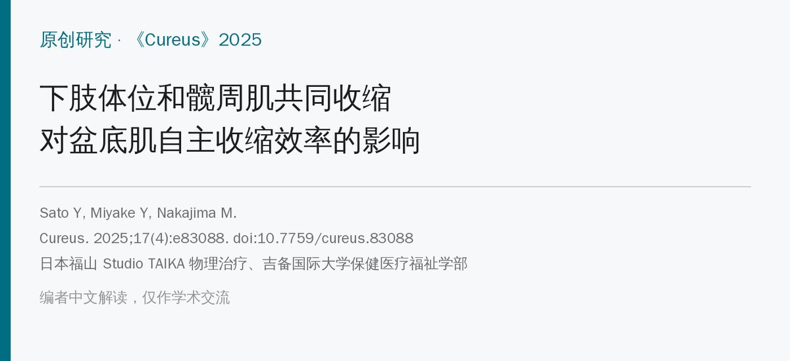
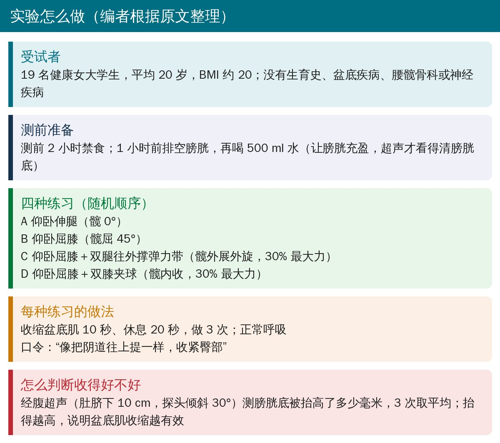
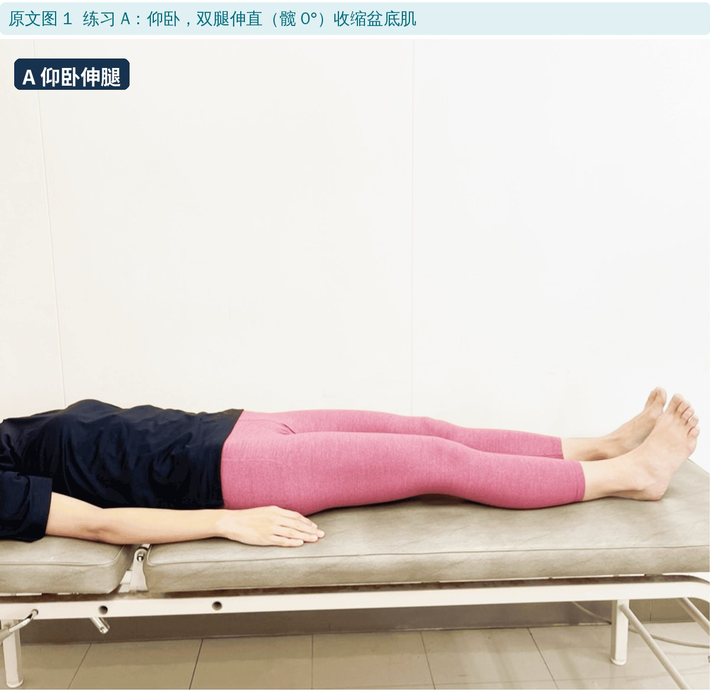
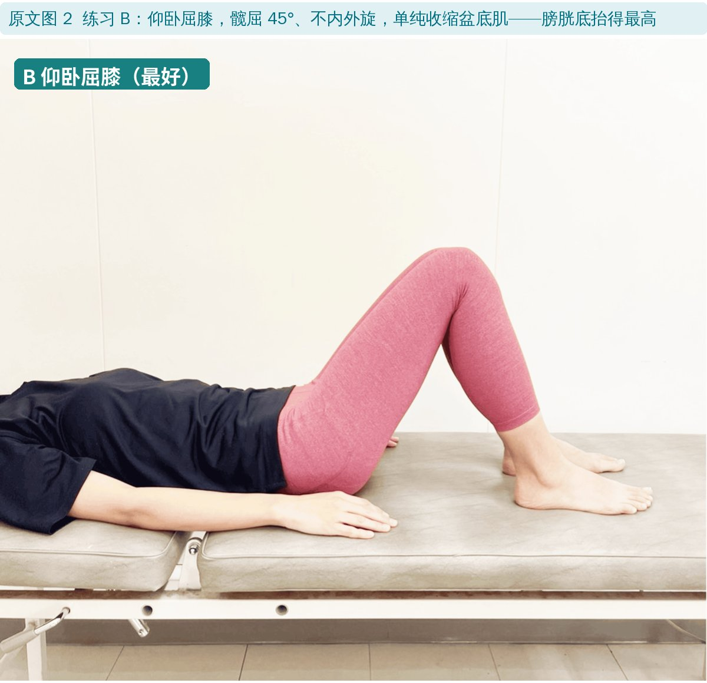
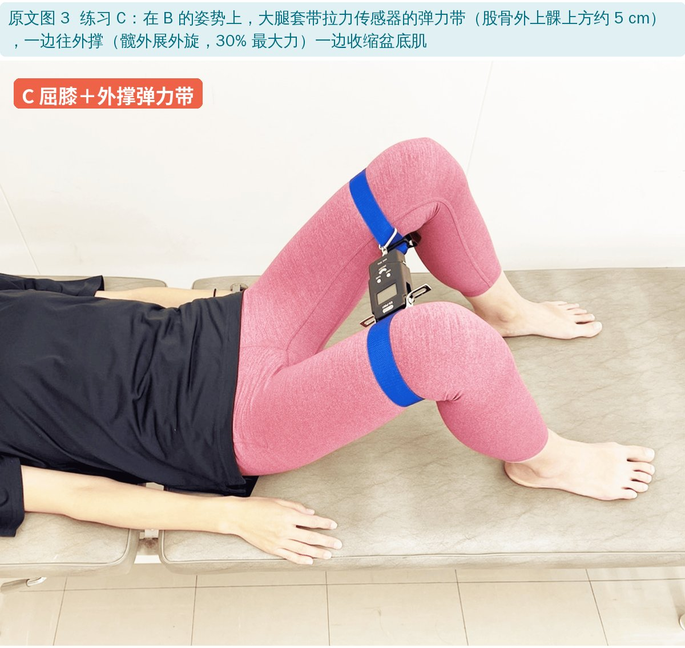
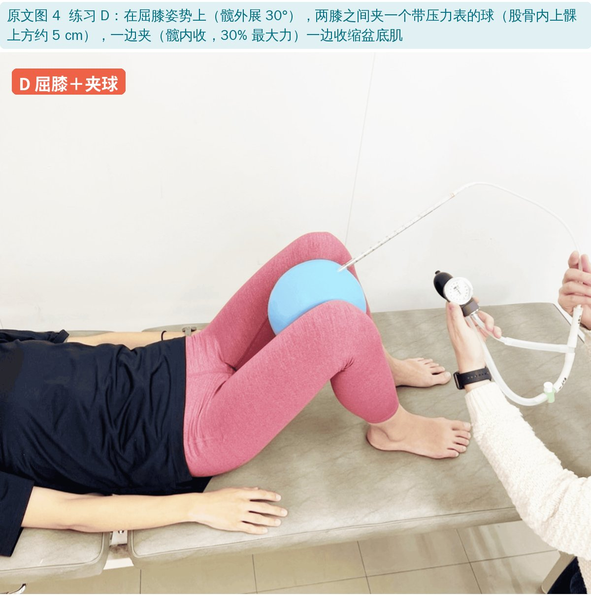
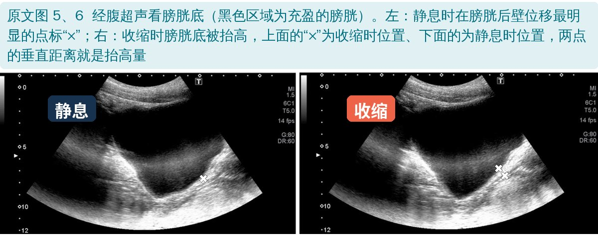
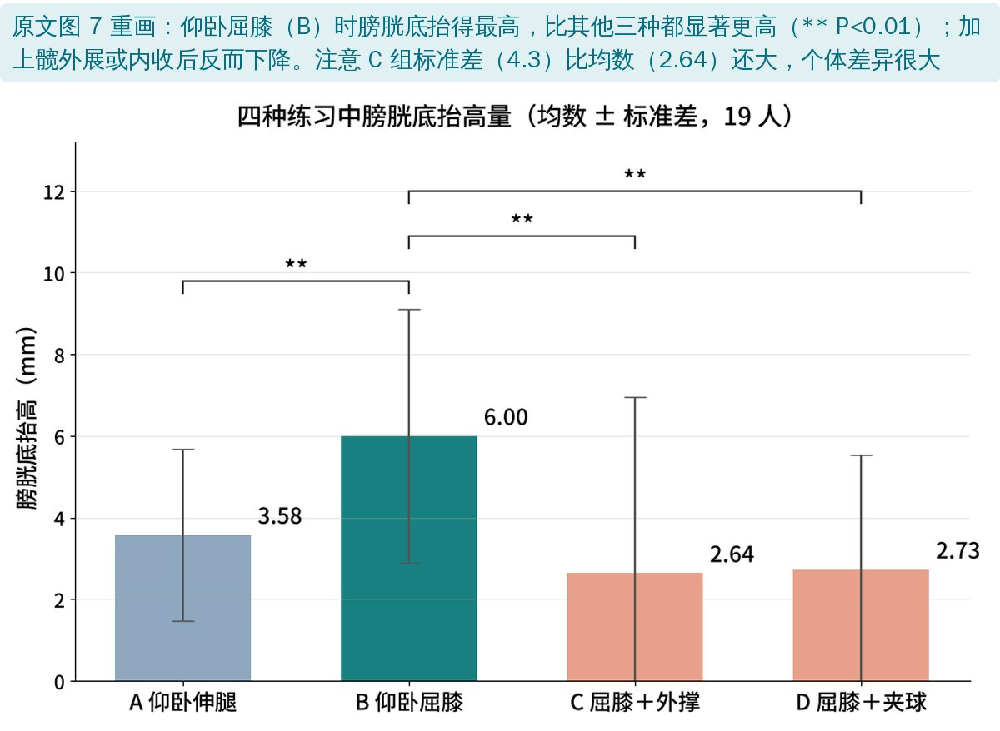
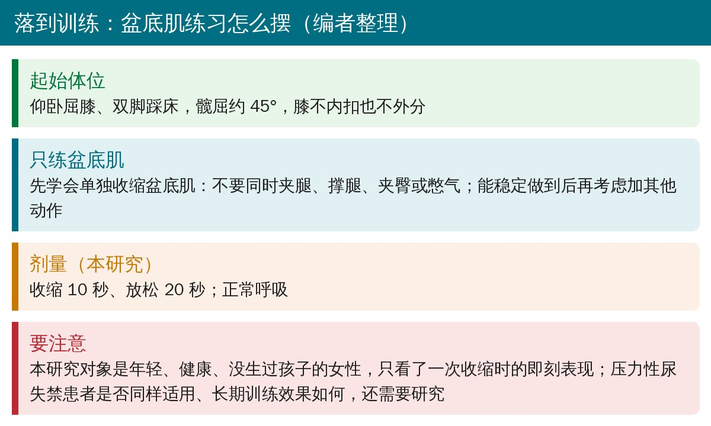

🔖原文信息（编者中文重排）
📚 文献信息
▪ Sato Y, Miyake Y, Nakajima M. Effects of Lower Limb Position and Peri-Hip Muscle Co-Contraction on the Efficiency of Voluntary Pelvic Floor Muscle (PFM) Contraction During PFM Exercises. Cureus. 2025;17(4):e83088. doi:10.7759/cureus.83088
▪ 作者单位：日本福山 Studio TAIKA（物理治疗）、吉备国际大学保健医疗福祉学部作业治疗学科和物理治疗学科
▪ 文章类型：原创研究（19 名健康女性，每人做 4 种练习的自身对照）
成年女性中约 30%～50% 有尿失禁，其中压力性尿失禁（咳嗽、打喷嚏、跳跃时漏尿）最常见，主要和盆底肌功能不良有关。盆底肌训练在日本指南中是 A 级推荐，但约 30% 的人不会正确地主动收缩盆底肌。
临床上常见两种“辅助”做法：一是换体位（躺着练还是屈膝练）；二是让患者同时夹腿或外撑腿，希望借髋内收肌、外展肌一起发力带动盆底肌。哪种体位更好、夹腿撑腿到底有没有用，并没有共识。

🔖实验流程（编者根据原文整理）

🔖原文图 1：A 仰卧伸腿

🔖原文图 2：B 仰卧屈膝

🔖原文图 3：C 屈膝＋外撑弹力带

🔖原文图 4：D 屈膝＋夹球
• C、D 两种都把髋部用力控制在最大自主用力的 30%，用拉力传感器或球上的压力表监控
• 四种练习的顺序随机；每种收缩 10 秒、休息 20 秒，做 3 次，正常呼吸
• 统一口令：“像把阴道往上提一样，收紧臀部”

🔖原文图 5、6：经腹超声测膀胱底抬高
由一名有经验的女性治疗师用经腹超声测量，另有女性检查者确保骨盆处于中立位。盆底肌收缩时会把膀胱底往上抬，抬得越高说明收缩越有效。

🔖四种练习的膀胱底抬高量（编者根据原文图 7 重画）
| 练习 | 膀胱底抬高（mm） | 与 B 比较 |
|---|---|---|
| A 仰卧伸腿 | 3.58 ± 2.1 | P＝0.001 |
| B 仰卧屈膝 | 6.00 ± 3.1 | — |
| C 屈膝＋外撑（髋外展） | 2.64 ± 4.3 | P＝0.001 |
| D 屈膝＋夹球（髋内收） | 2.73 ± 2.8 | P＝0.001 |
四种练习的膀胱底抬高量（均数 ± 标准差，19 人，根据原文结果整理）
• 仰卧屈膝（B）最好：膀胱底抬高 6.00 mm，比仰卧伸腿（A）多约 2.4 mm
• 加上夹腿或撑腿反而更差：C、D 和 B 是同一个屈膝体位，只是多了髋部用力，抬高量却降到 2.6～2.7 mm，甚至比伸腿平躺还低
• A、C、D 三者之间没有报告显著差异
• 屈髋为什么好：屈髋 45° 时闭孔内肌和耻骨直肠肌的腱弓被拉紧，可能更容易感知并收缩位置深在、负责上提膀胱底的耻骨直肠肌
• 夹腿撑腿为什么差：作者认为是双重任务干扰——同时做两件都不容易的事，注意力被分散，至少一件做不好；就像老人边走路边倒数数字时步速变慢、平衡变差
• 只是健康年轻女性的一次性测量：没有尿失禁患者、没有生育过的人，也没有训练效果；作者自己也承认，对真正的患者，夹腿撑腿是否帮助收缩还不能排除
• 膀胱底抬高是间接指标：经腹超声测的是膀胱后壁位移，会受腹压、呼吸、膀胱充盈程度和探头位置影响；没有测盆底肌肌电或阴道压力
• 统计方法不对：同一批人做了 4 种练习（自身对照），却用了比较独立组的单因素方差分析，并把四种练习称为“组”；应该用重复测量方差分析
• 个体差异很大：C 组标准差 4.3 mm 大于均数 2.64 mm，说明有人抬得很高、有人几乎没抬甚至下降
• “双重任务”只是推测：研究没有测注意力，也没有测髋部用力时盆底肌是否被腹压往下推；C、D 的屈膝角度从照片看也比 B 更大
• 口令里包含“收紧臀部”，本身就可能引起臀肌参与，和“单独收缩盆底肌”的理念不完全一致
• 体位名称前后不一：方法里四种练习都是“仰卧屈膝（supine kneeling）”，讨论和结论却写成“跪立位（upright kneeling）比仰卧更好”——两者完全不是一个姿势，照片显示是仰卧屈膝
• 效应量算不出来：按文中均数和标准差计算，B 与 A、C、D 比较的 Cohen d 约为 0.9、0.9、1.1，文中却写 1.46、1.56、1.61；三个 P 值也都恰好是 0.001
• 膀胱准备矛盾：先写“测前 1 小时排空膀胱后喝 500 ml 水”，后面又写“测量前让受试者排尿以统一膀胱容量”——排空后超声就看不清膀胱底
• 超声频率：写成“3 Hz”，超声探头频率应为兆赫（MHz）级
• 图 6 图注：提到“静息（a）”和“最大抬高（b）”两张图，但原文图 5、6 没有 a、b 标记
• 结果描述混乱：结果部分有一句“B 组在盆底收缩后接着做屈膝体位”，与方法描述不符
• 练习 D 的体位：写“屈髋 45°、髋外展 30°”再做内收夹球，和练习 B、C 的起始体位不同
• 用词：讨论里说用低频电刺激让盆底肌“利他地（altruistic）”收缩，应为“被动地”

🔖盆底肌练习体位要点（编者整理）
• 教盆底肌收缩时，先用仰卧屈膝位，比平躺伸腿更容易收到位
• 先别加夹腿、撑腿：对健康女性来说，这样不但不帮忙，还会让盆底肌收缩变差；先学会单独、准确地收缩
• 看得见更好：有条件的话用经腹超声或其他生物反馈，让患者看到膀胱底被抬起，比单靠口令更可靠
• 对已经尿失禁、产后或盆底功能很差的患者，体位和辅助动作的效果可能不同，需要个体化评估
欢迎关注骨科康复小黄公众号，获取更多物理治疗的专业知识！
📄参考文献：
Sato Y, Miyake Y, Nakajima M. Effects of Lower Limb Position and Peri-Hip Muscle Co-Contraction on the Efficiency of Voluntary Pelvic Floor Muscle (PFM) Contraction During PFM Exercises. Cureus. 2025;17(4):e83088. doi:10.7759/cureus.83088
原文以 CC BY 4.0 协议开放获取，版权归原作者所有。本文为学术交流中文解读：原文图 1～6 引自原文，图中中文标签为编者所加；结果图由编者根据原文用中文重画，流程卡和要点卡为编者整理。仅供学习交流，如有侵权请联系删除。